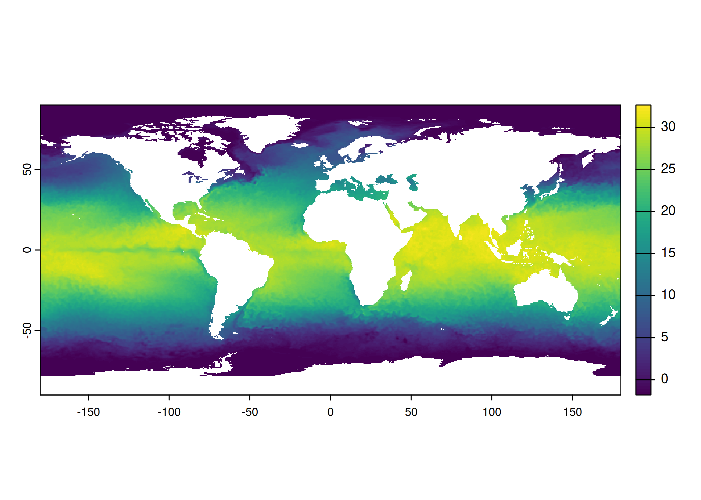

library(terra)
library(ncdf4)2 HDF4
2.1 NetCDF (Network Common Data Form)
Layers in the file can be listed using the nc_open() function:
file <- fs::path("data", "avhrr-only-v2.20160503.nc")
f <- nc_open(file)
fFile data/avhrr-only-v2.20160503.nc (NC_FORMAT_CLASSIC):
4 variables (excluding dimension variables):
short sst[lon,lat,zlev,time]
long_name: Daily sea surface temperature
units: degrees C
_FillValue: -999
add_offset: 0
scale_factor: 0.00999999977648258
valid_min: -300
valid_max: 4500
short anom[lon,lat,zlev,time]
long_name: Daily sea surface temperature anomalies
units: degrees C
_FillValue: -999
add_offset: 0
scale_factor: 0.00999999977648258
valid_min: -1200
valid_max: 1200
short err[lon,lat,zlev,time]
long_name: Estimated error standard deviation of analysed_sst
units: degrees C
_FillValue: -999
add_offset: 0
scale_factor: 0.00999999977648258
valid_min: 0
valid_max: 1000
short ice[lon,lat,zlev,time]
long_name: Sea ice concentration
units: percentage
_FillValue: -999
add_offset: 0
scale_factor: 0.00999999977648258
valid_min: 0
valid_max: 100
4 dimensions:
time Size:1
long_name: Center time of the day
units: days since 1978-01-01 00:00:00
zlev Size:1
long_name: Sea surface height
units: meters
actual_range: 0, 0
lat Size:720
long_name: Latitude
units: degrees_north
grids: Uniform grid from -89.875 to 89.875 by 0.25
lon Size:1440
long_name: Longitude
units: degrees_east
grids: Uniform grid from 0.125 to 359.875 by 0.25
7 global attributes:
Conventions: CF-1.0
title: Daily-OI-V2, Final, Data (Ship, Buoy, AVHRR: NOAA19, METOP, NCEP-ice)
History: Version 2.0
creation_date: 2016-07-01 23:22
Description: Reynolds, et al.(2007) Daily High-resolution Blended Analyses. Available at ftp://eclipse.ncdc.noaa.gov/pub/OI-daily/daily-sst.pdf Climatology is based on 1971-2000 OI.v2 SST, Satellite data: Navy NOAA19 METOP AVHRR, Ice data: NCEP ice
Source: NOAA/National Climatic Data Center
Contact: Dick Reynolds, email: Richard.W.Reynolds@noaa.gov & Chunying Liu, email: Chunying.liu@noaa.govOpening a specific layer is done with the ncvar_get() function:
names(f[["var"]])[1] "sst" "anom" "err" "ice" sst <- ncvar_get(f, "sst")
dim(sst)[1] 1440 720nc_close(f)Here, we’re extracting the sea surface temperature (SST) data and checking its dimensions. Always remember to close the NetCDF file after use.
2.2 Open NetCDF file using rast()
The terra package provides an alternative method to work with NetCDF files. This creates a SpatRaster object, which is more memory-efficient for large datasets. It looks like the raster is rotated.
r <- rast(file, lyrs = 1L)
rclass : SpatRaster
dimensions : 720, 1440, 1 (nrow, ncol, nlyr)
resolution : 0.25, 0.25 (x, y)
extent : 0, 360, -90, 90 (xmin, xmax, ymin, ymax)
coord. ref. : lon/lat WGS 84 (CRS84) (OGC:CRS84)
source : avhrr-only-v2.20160503.nc:sst
varname : sst (Daily sea surface temperature)
name : sst_zlev=0
unit : degrees C
time (days) : 2016-05-03 plot(r)
We can rotate it back with the rotate() function:
r <- rotate(r)
plot(r)
Converting to a data frame can be useful for certain types of analysis or visualization, but be cautious with large datasets as this can be memory-intensive.
df <- as.data.frame(r)
head(df)| sst_zlev=0 |
|---|
| -1.7 |
| -1.7 |
| -1.7 |
| -1.7 |
| -1.7 |
| -1.7 |
2.3 Compare the values (WIP)
I am noticing that the values of sst and df$sst_zlev=0`` are not the same. I should investigate this further.
# Validate if I have to transpose the `sst` matrix before comparing
waldo::compare(df$`sst_zlev=0`, as.vector(t(sst)), tolerance = 1e-3) old | new
[1] -1.69999996200204 - NA [1]
[2] -1.69999996200204 - NA [2]
[3] -1.69999996200204 - NA [3]
[4] -1.69999996200204 - NA [4]
[5] -1.69999996200204 - NA [5]
[6] -1.69999996200204 - NA [6]
[7] -1.69999996200204 - NA [7]
[8] -1.69999996200204 - NA [8]
[9] -1.69999996200204 - NA [9]
[10] -1.69999996200204 - NA [10]
... ... ... and 707 more ...
old | new
[716] -1.69999996200204 | -1.69999996200204 [718]
[717] -1.69999996200204 | -1.69999996200204 [719]
[718] -1.69999996200204 | -1.69999996200204 [720]
[719] -1.69999996200204 - NA [721]
[720] -1.69999996200204 - NA [722]
[721] -1.69999996200204 - NA [723]
[722] -1.69999996200204 - NA [724]
[723] -1.69999996200204 - NA [725]
[724] -1.69999996200204 - NA [726]
[725] -1.69999996200204 - NA [727]
... ... ... and 7187 more ...
old | new
[7916] -1.69999996200204 | -1.69999996200204 [7918]
[7917] -1.69999996200204 | -1.69999996200204 [7919]
[7918] -1.69999996200204 | -1.69999996200204 [7920]
[7919] -1.69999996200204 - NA [7921]
[7920] -1.69999996200204 - NA [7922]
[7921] -1.69999996200204 - NA [7923]
[7922] -1.68999996222556 - NA [7924]
[7923] -1.68999996222556 - NA [7925]
[7924] -1.68999996222556 - NA [7926]
[7925] -1.68999996222556 - NA [7927]
... ... ... and 624996 more ...
old | new
[632839] -1.79999995976686 | -1.79999995976686 [632841]
[632840] -1.79999995976686 | -1.79999995976686 [632842]
[632841] -1.79999995976686 | -1.79999995976686 [632843]
[632842] -1.75999996066093 - -1.79999995976686 [632844]
[632843] -1.74999996088445 - -1.79999995976686 [632845]
[632844] -1.74999996088445 - -1.79999995976686 [632846]
[632845] -1.76999996043742 - -1.79999995976686 [632847]
[632846] -1.75999996066093 - -1.79999995976686 [632848]
[632847] -1.75999996066093 - -1.79999995976686 [632849]
[632848] -1.74999996088445 - -1.79999995976686 [632850]
... ... ... and 1416 more ...
old | new
[634269] -1.79999995976686 | -1.79999995976686 [634271]
[634270] -1.79999995976686 | -1.79999995976686 [634272]
[634271] -1.79999995976686 | -1.79999995976686 [634273]
[634272] -1.79999995976686 - -1.78999995999038 [634274]
[634273] -1.79999995976686 - -1.7799999602139 [634275]
[634274] -1.79999995976686 - -1.78999995999038 [634276]
[634275] -1.79999995976686 - -1.78999995999038 [634277]
[634276] -1.79999995976686 - -1.78999995999038 [634278]
[634277] -1.79999995976686 | -1.79999995976686 [634279]
[634278] -1.79999995976686 | -1.79999995976686 [634280]
... ... ... and 1 more ...
old | new
[634284] -1.79999995976686 | -1.79999995976686 [634286]
[634285] -1.79999995976686 | -1.79999995976686 [634287]
[634286] -1.79999995976686 | -1.79999995976686 [634288]
[634287] -1.7799999602139 - -1.79999995976686 [634289]
[634288] -1.7799999602139 - -1.79999995976686 [634290]
[634289] -1.75999996066093 - -1.79999995976686 [634291]
[634290] -1.70999996177852 - -1.79999995976686 [634292]
[634291] -1.65999996289611 - -1.79999995976686 [634293]
[634292] -1.6099999640137 - -1.79999995976686 [634294]
[634293] -1.57999996468425 - -1.79999995976686 [634295]
... ... ... and 1410 more ...
old | new
[635709] -1.79999995976686 | -1.79999995976686 [635711]
[635710] -1.79999995976686 | -1.79999995976686 [635712]
[635711] -1.79999995976686 | -1.79999995976686 [635713]
[635712] -1.79999995976686 - -1.78999995999038 [635714]
[635713] -1.79999995976686 - -1.7799999602139 [635715]
[635714] -1.79999995976686 - -1.76999996043742 [635716]
[635715] -1.79999995976686 - -1.7799999602139 [635717]
[635716] -1.79999995976686 - -1.7799999602139 [635718]
[635717] -1.79999995976686 - -1.78999995999038 [635719]
[635718] -1.79999995976686 - -1.78999995999038 [635720]
... ... ... and 3 more ...
old | new
[635725] -1.79999995976686 | -1.79999995976686 [635727]
[635726] -1.79999995976686 | -1.79999995976686 [635728]
[635727] -1.79999995976686 | -1.79999995976686 [635729]
[635728] -1.78999995999038 - -1.79999995976686 [635730]
[635729] -1.7799999602139 - -1.79999995976686 [635731]
[635730] -1.75999996066093 - -1.79999995976686 [635732]
[635731] -1.72999996133149 - -1.79999995976686 [635733]
[635732] -1.70999996177852 - -1.79999995976686 [635734]
[635733] -1.68999996222556 - -1.79999995976686 [635735]
[635734] -1.65999996289611 - -1.79999995976686 [635736]
... ... ... and 1411 more ...
old | new
[637150] -1.79999995976686 | -1.79999995976686 [637151]
[637151] -1.79999995976686 | -1.79999995976686 [637152]
[637152] -1.79999995976686 | -1.79999995976686 [637153]
[637153] -1.79999995976686 - -1.78999995999038 [637154]
[637154] -1.79999995976686 - -1.7799999602139 [637155]
[637155] -1.79999995976686 - -1.76999996043742 [637156]
[637156] -1.79999995976686 - -1.76999996043742 [637157]
[637157] -1.79999995976686 - -1.76999996043742 [637158]
[637158] -1.79999995976686 - -1.76999996043742 [637159]
[637159] -1.79999995976686 - -1.7799999602139 [637160]
... ... ... and 4 more ...
old | new
[637164] -1.79999995976686 | -1.79999995976686 [637166]
[637165] -1.79999995976686 | -1.79999995976686 [637167]
[637166] -1.79999995976686 | -1.79999995976686 [637168]
[637167] -1.78999995999038 - -1.79999995976686 [637169]
[637168] -1.78999995999038 - -1.79999995976686 [637170]
[637169] -1.78999995999038 - -1.79999995976686 [637171]
[637170] -1.78999995999038 - -1.79999995976686 [637172]
[637171] -1.78999995999038 - -1.79999995976686 [637173]
[637172] -1.78999995999038 - -1.79999995976686 [637174]
[637173] -1.7799999602139 - -1.79999995976686 [637175]
... ... ... and 1416 more ...
And 11 more differences ...# Check for missing values
sum(is.na(sst))[1] 345650# Looks like there are no missing values in the data frame
sum(is.na(df$`sst_zlev=0`))[1] 0length(sst)[1] 1036800length(df$`sst_zlev=0`)[1] 691150# Check data types
str(sst) num [1:1440, 1:720] NA NA NA NA NA NA NA NA NA NA ...str(df$`sst_zlev=0`) num [1:691150] -1.7 -1.7 -1.7 -1.7 -1.7 ...# Compare a subset of data
sst_subset <- sst[1:10, 1:10]
df_subset <- df$`sst_zlev=0`[1:100] # Adjust indexing as needed
# Compare the subsets
waldo::compare(sst_subset, df_subset, tolerance = 1e-3)`dim(old)` is an integer vector (10, 10)
`dim(new)` is absent
`old`: NA NA NA NA NA NA NA NA NA NA and 90 more...
`new`: -1.7 -1.7 -1.7 -1.7 -1.7 -1.7 -1.7 -1.7 -1.7 -1.7 ...